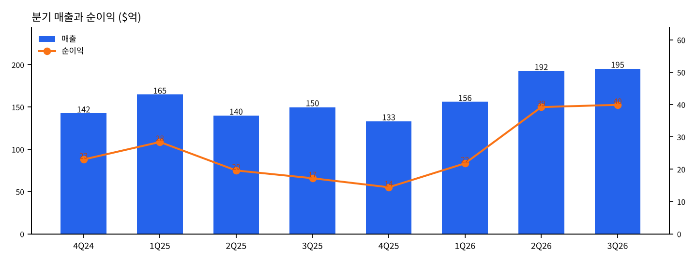
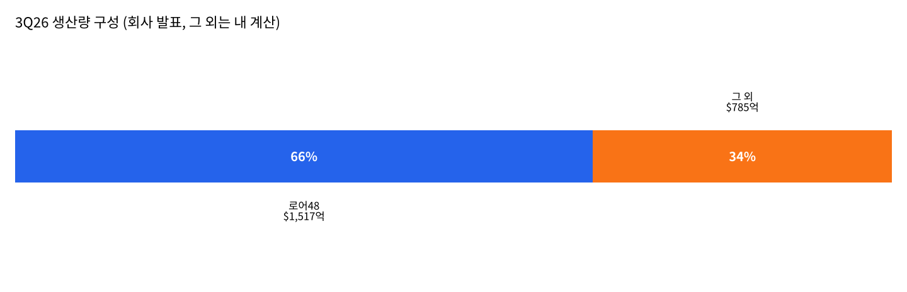
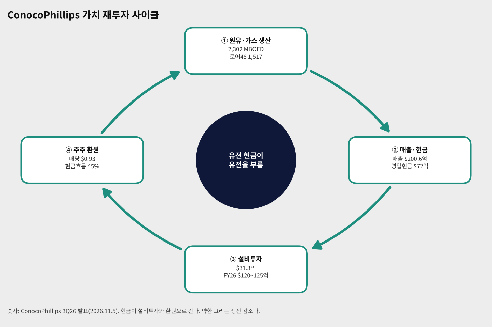

ConocoPhillips는 원유·가스를 캐서 팔고 그 현금으로 배당·자사주를 늘리고 유전을 개발한다. 유가가 이익을 크게 좌우한다.
| 항목 | 내용 |
|---|---|
| 종목 | ConocoPhillips (COP) · NYSE · 에너지(석유·가스) · 텍사스 휴스턴 |
| 최근 분기(3Q26) | 매출 $200.6억, 조정 EPS $3.27 |
| 핵심 지역 | 로어48(미국 본토), 알래스카, 해외 |
| 직원 수 | 약 9,900명(트레이딩뷰) |
| 멀티플 | PER·PEG·P/S는 08~10 항목 표 참조 |
| 직책 | 인물 | 역할·특징 |
|---|---|---|
| 회장·CEO | 라이언 랜스(Ryan Lance) | CEO |
| CFO | (확인 필요) | 회사 공개 자료 기준 확인 필요 |
경영 스타일: 현금 환원 우선. 원가가 낮은 자산에 투자하고 현금흐름의 일정 비율을 돌려준다.
생산량이 줄어도 설비투자를 줄여 현금을 지키는 방식이다.
2029년 잉여현금흐름을 2025년 대비 약 $70억 늘리는 것이 목표다.
다음 실적발표는 세 가지 질문에 답하는 자리다.
1. 생산량이 4Q 가이던스에 닿나?
2. 2027 설비투자 가이던스는?
3. Willow 프로젝트가 계획대로 가나?
한 줄 판정 규칙: 첫 질문(생산량)이 가이던스를 지키면 약한 고리(유가 의존)가 가려진다.
일정: 4Q26 실적은 2027.02.11 발표 예정이다. 2027 가이던스도 이때 확정된다.
| 분기 | 매출 | 순이익 | EPS | 조정 EPS | 특이 사항 |
|---|---|---|---|---|---|
| 4Q24 | $142.4억 | $23.0억 | 1.90 | 1.98 | |
| 1Q25 | $164.6억 | $28.4억 | 2.23 | 2.09 | |
| 2Q25 | $139.8억 | $19.6억 | 1.56 | 1.42 | |
| 3Q25 | $149.7억 | $17.2억 | 1.38 | 1.61 | |
| 4Q25 | $133.1억 | $14.4억 | 1.16 | 1.02 | |
| 1Q26 | $156.0억 | $21.8억 | 1.78 | 1.89 | |
| 2Q26 | $192.5억 | $39.2억 | 3.23 | 3.24 | |
| 3Q26 | $195.2억 | $39.9억 | 3.34 | 3.27 | 조정 EPS 전년 대비 2배 |
매출은 트레이딩뷰 스캐너의 분기 총매출이라 회사가 발표한 순매출과 다를 수 있다. 매출·순이익·EPS(GAAP 희석)는 트레이딩뷰 스캐너, 조정 EPS는 트레이딩뷰 실적 페이지의 Reported 값이다. 분기 정렬은 오래된 분기→최신이다.

흐름 요약: 최근 분기 매출은 $195.2억로 전년 동기 $149.7억 대비 +30.4%, 순이익은 $39.9억(전년 $17.2억)다. 최근 4분기 GAAP EPS는 $9.51, 조정 EPS는 $9.42다.
| 항목 | 내용 | 3Q26 생산(MBOED) | 비고 |
|---|---|---|---|
| 로어48 | 미국 본토 셰일 | 1,517 | 전체의 66% |
| 그 외(내 계산) | 알래스카·해외 | 785 | 총 2,302에서 로어48을 뺀 값 |

생산의 3분의 2가 로어48이다. 매출 구성이 아니라 생산량 구성이라는 점에 유의한다.
ConocoPhillips는 에너지를 안정적으로 공급하며 주주에게 현금을 돌려주는 것을 목표로 한다.
| 축 | 내용 |
|---|---|
| 생산 | 2,302 MBOED |
| 환원 | 현금흐름의 45% |
| 배당 | 분기 $0.93 |

| 이동평균 | 값 | 종가 대비 | 위치 |
|---|---|---|---|
| 5일선 | $139.35 | -3.6% | 종가 아래 |
| 20일선 | $142.67 | -5.8% | 종가 아래 |
| 50일선 | $137.46 | -2.2% | 종가 아래 |
| 100일선 | $129.43 | +3.8% | 종가 위 |
| 200일선 | $123.84 | +8.5% | 종가 위 |
52주 고가 $154.28(2026-10-30)·저가 $85.70(2025-11-25) 범위에서 종가 $134.40는 100일선, 200일선을 웃돌고 5일선, 20일선, 50일선은 밑돈다.
| 규칙 | 기준 | 현재 값 | 신호 |
|---|---|---|---|
| 장기 추세 필터 | 종가 vs 200일선 | $134.40 > $123.84 | 매수 |
| 중장기 교차 | 50일선 vs 200일선 | $137.46 > $123.84 | 매수 |
| 단기 교차 | 20일선 vs 50일선 | $142.67 > $137.46 | 매수 |
| 돈키언 채널 | 55일 고가 $154.28 / 저가 $123.46 | 중간값 $138.87 아래 | 매도 |
| 1개월 모멘텀 | 21거래일 수익률 | -7.9% (기준 $145.95) | 매도 |
| 3개월 모멘텀 | 63거래일 수익률 | -0.4% (기준 $134.89) | 매도 |
| 6개월 모멘텀 | 126거래일 수익률 | +9.8% (기준 $122.36) | 매수 |
| 12개월 모멘텀 | 252거래일 수익률 | +51.5% (기준 $88.72) | 매수 |
| 종합 (8개 평균) | +0.25 | 매수 |
해석: 매수 신호 5개(장기 추세 필터, 중장기 교차, 단기 교차, 6개월 모멘텀, 12개월 모멘텀), 매도 신호 3개(돈키언 채널, 1개월 모멘텀, 3개월 모멘텀). CTA 점수 +0.25(매수). 14일 ATR $4.63 (3.4%), 52주 고가 $154.28 · 저가 $85.70.
| 가격 | 기준 | 무엇이 바뀌나 |
|---|---|---|
| $154.28 | 55일 고가 | 돌파 시 채널 상단 갱신 |
| $145.95 | 1개월 모멘텀 기준가 | 종가가 이 가격 위면 1개월 신호 매수 |
| $138.87 | 돈키언 중간값 | 55일 채널 중간값 위/아래로 신호가 바뀜 |
| $134.89 | 3개월 모멘텀 기준가 | 종가가 이 가격 위면 3개월 신호 매수 |
| $123.84 | 200일선 | 종가가 이 선 위/아래인지로 장기 추세 신호가 바뀜 |
| $123.46 | 55일 저가 | 이탈 시 채널 하단 갱신 |
| $122.36 | 6개월 모멘텀 기준가 | 종가가 이 가격 위면 6개월 신호 매수 |
| $88.72 | 12개월 모멘텀 기준가 | 종가가 이 가격 위면 12개월 신호 매수 |
가격 수준은 신호가 바뀌는 기준선일 뿐 진입·청산 가격 제안이 아니다. 20일/50일 교차는 이동평균 자체가 움직여 단일 가격으로 표시하지 않았다. 일봉·주봉은 종가 기준 직접 계산(고저 데이터 미사용)이다.
| 악재 요인 | 내용 | 강도 |
|---|---|---|
| 유가 의존 | 이익이 유가에 크게 연동 | 높음 |
| 생산 감소 | 3Q 생산 -4% | 중간 |
| 대형 프로젝트 | Willow $85~90억 투자 위험 | 중간 |
| 티커 | 회사 | PER(TTM) | PEG | P/S | EPS 성장(YoY) |
|---|---|---|---|---|---|
| COP | ConocoPhillips | 14.3배 | 0.44 | 2.35배 | +33% |
| XOM | Exxon Mobil | 16.5배 | 0.42 | 1.76배 | +41% |
| CVX | Chevron | 15.1배 | 0.17 | 1.84배 | +93% |
| EOG | EOG Resources | 9.7배 | 0.18 | 2.77배 | +54% |
| OXY | Occidental Petroleum | 12.4배 | 0.06 | 2.32배 | +216% |
비교 결론: ConocoPhillips의 PER 14.3배는 Exxon Mobil·Chevron보다 낮고 EOG Resources·Occidental보다 높다. PEG 0.44는 Chevron·EOG·Occidental보다 높고 Exxon Mobil(0.42)과 비슷하다.
현금·부채는 트레이딩뷰 스캐너 값이다. 자산 매각으로 부채/자본이 26%다.
| 지표 | 값 | 출처 | 해석 |
|---|---|---|---|
| 현금·단기투자 | $99억 | 트레이딩뷰 스캐너(최근 분기) | |
| 총부채 | $233억 | 트레이딩뷰 스캐너(최근 분기) | |
| 순부채(부채−현금) | $134억 | 내 계산 | 현금 대비 부채 부담 |
| 잉여현금흐름(TTM) | $111억 | 트레이딩뷰 스캐너 | |
| TTM 매출 | $677억 | 트레이딩뷰 스캐너 |
| 기준 | 매출 | P/S | 비고 |
|---|---|---|---|
| 내 계산(종가 ÷ 최근 4분기 매출 합계) | $676.8억 | 2.35배 | 시총은 정렬용 데이터에서만 사용 |
| 동종(트레이딩뷰) | – | XOM 1.76배 · CVX 1.84배 · EOG 2.77배 · OXY 2.32배 | 11.19 |
해석: 잉여현금흐름이 배당과 자사주를 감당한다(내 해석).
EBITDA는 영업활동의 현금 창출력을 보는 지표이고, PEG는 PER을 EPS 성장률로 나눈 값이다. EBITDA·FCF는 트레이딩뷰 TTM 값이다.
| 지표 | 값 | 산출 |
|---|---|---|
| EBITDA(TTM) | $289억 | 트레이딩뷰 스캐너 |
| EBITDA 마진 | 42.7% | EBITDA ÷ TTM 매출(내 계산) |
| FCF 마진 | 16.4% | FCF ÷ TTM 매출(내 계산) |
| PER(GAAP TTM) | 14.1배 | $134.40 ÷ $9.51 |
| PER(조정 TTM) | 14.3배 | $134.40 ÷ $9.42 |
| 방식 | PER | EPS 성장률 | PEG | 판정 |
|---|---|---|---|---|
| 조정 EPS (TTM $9.42) | 14.3배 | +33% ($7.10 → $9.42) | 0.44 | 적극 매수 |
| GAAP EPS (TTM $9.51) | 14.1배 | +35% ($7.07 → $9.51) | 0.41 | 적극 매수 |
판정: 조정 EPS 기준 PEG 0.44 → 0.5 이하(적극 매수 구간) PEG 기준은 1.0 이하 투자 적격, 0.5 이하 적극 매수다. EPS 성장률은 최근 4분기 EPS 합계를 직전 4분기 합계와 비교한 값(내 계산)이고, 일회성 항목이 있으면 조정 EPS 행을 함께 본다.

ConocoPhillips의 사이클: 유전 현금이 설비투자로 가서 생산을 유지하고 남는 현금은 주주에게 돌아간다.
| 고리 | 현재 숫자·근거 |
|---|---|
| ① 원유·가스 생산 | 3Q 생산 2,302 MBOED · 로어48 1,517 MBOED |
| ② 매출·현금 | 매출 $200.6억(+29%) · 영업현금흐름 $72억 |
| ③ 설비투자 | 3Q 설비투자 $31.3억 · FY26 $120~125억 |
| ④ 주주 환원 | 분기 배당 $0.93(+11%) |
사이클의 특징: 약한 고리는 생산 감소다(3Q -4%). "(내 해석)"은 보고서 수치가 아닌 해석이다.